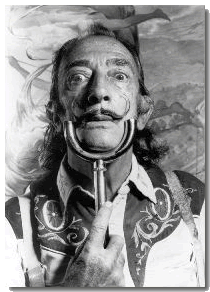

Salvador Dalì nasce a Figueras, in Spagna, nel 1904 e muore nel 1989. A Madrid è compagno d'accademia di Garcia Lorca e Bunuel.
L'attività culturale legata al suo periodo giovanile, coltivata sia nel suo ambiente familiare sia nella sua città natale di Figueras, e più in generale in Catalogna, contribuirono in modo decisivo al risveglio ed alla formazione del suo spirito artistico. E' proprio questo mondo familiare, in cui risaltano le figure della nonna, del padre e della sorella Anna Maria, e quello dei paesaggi di Figueras e Cedaquès, dove trascorre la sua infanzia e la sua adolescenza, quello che il giovane Dalì rispecchierà e interpreterà nelle sue prime opere.
L'evoluzione artistica della sua opera è molto precoce, e rapidamente crea una sintesi tra la formazione classica dell'artista e l'aria impressionista e delle nuove avanguardie, come - il Fauvismo, il Cubismo e il Surrealismo - che egli respira in quel periodo.
Negli anni '20 la sua permanenza a Madrid, le relative esperienze e scoperte e le amicizie allacciate, contribuiscono a rafforzare quello spirito inquieto ed originale che già da allora caratterizza la sua pittura. Questo periodo culmina con una serie di avvenimenti cruciali degli anni 1929-1930, che segnano l'adesione di Dalì al gruppo surrealista parigino, l'uscita del film "Un chien andalou" scritto e prodotto in collaborazione con Luis Bunuel, l'inizio della sua relazione con Gala, colei che da quel momento diventerà la sua compagna e musa ispiratrice, rimanendogli a fianco per tutta la vita.
Dalì cerca di vivere una vita surrealista in maniera assolutamente plateale: con Benjamin Péret, Dalì incarna il surrealista-tipo degli anni Trenta, mettendo insieme gli aspetti materialisti e radicali che caratterizzano il movimento ma cercando troppo presto il successo, mondano e commerciale, e prendendo di conseguenza una posizione assolutamente incompatibile col movimento, col quale rompe definitivamente quando manifesta apertamente le sue simpatie reazionarie.
La sua opera è certamente ricca e varia, delirante e visionaria, ma tradizionale e scontata nella tecnica pittorica. I primi paesaggi sono allucinati e deserti, popolati di personaggi simbolici, carichi di significati e allusioni sessuali; la seconda maniera è più accademica.
Il deterioramento delle condizioni fisiche di Dalì corrisponde ad una progressiva esemplificazione tecnica e formale delle sue opere, oltre a provocare un'insistenza, prima della sua morte, avvenuta nel 1989, a lasciare scritto in forma chiara tutto quanto egli desideri faccia parte della storia dell'arte.